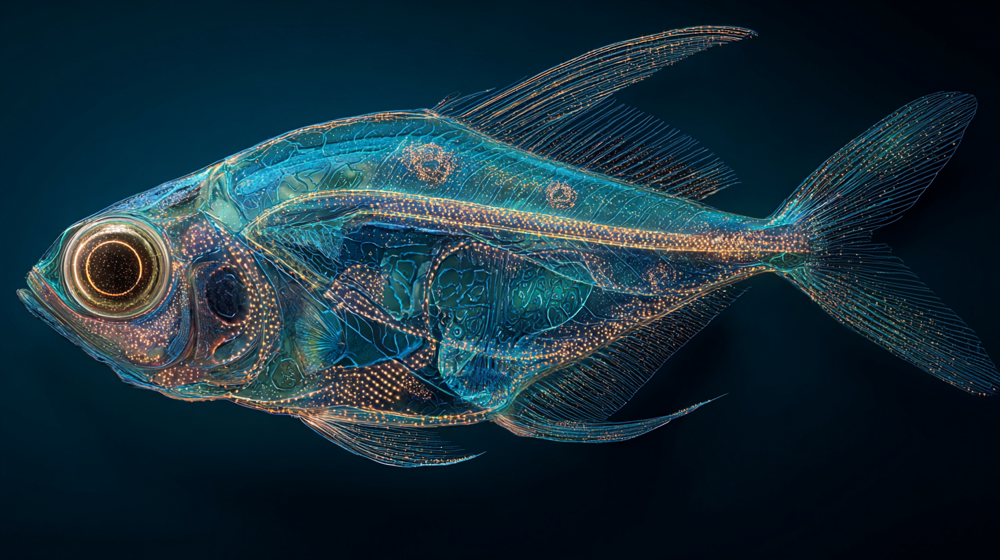

Comportement thermomécanique de composites à matrice céramique SiC/SiC-ZrB₂ pour systèmes de protection thermique de rentrée atmosphérique
Caractérisation expérimentale et modélisation multi-échelle de panneaux CMC exposés à des flux thermiques supérieurs à 2 000 °C sur l'arc plasma VULCAIN-III. La formulation CMC-20Z démontre une rétention de résistance de 89 % à 2 100 °C, ouvrant la voie à une certification pour la mission RETOUR-I en 2028.
NK-125 : validation expérimentale d'un propulseur ionique à grilles tri-étages — impulsion spécifique de 9 620 s à 125 kW
Campagne TORCH-IV : poussée de 542 mN, rendement anodique 78,4 % et durée de vie qualifiée 12 000 h. Performance sans précédent pour la classe 100+ kW, ouvrant la voie à la mission PROMETHEUS-2 Terre–Jupiter.
Croissance microbienne active en conditions martiennes simulées — 560 jours dans l'enceinte HADES-2
Trois espèces extrêmophiles, dont une archée inédite (Ferroacidus ifrasensis nov. sp.), maintiennent une croissance mesurable pendant 560 jours sous pression CO₂, UV martiens, cycles −63 °C / +20 °C et régolithe perchlorate. Première démonstration de croissance active — et non de simple survie — sous l'intégralité du profil martien combiné.

Fidélité des protocoles d'intrication quantique sur canal bruité en configuration longue portée
Résultats expérimentaux d'un protocole de communication quantique testé sur une liaison simulée de 40 000 km. Le taux de fidélité mesuré dépasse 97,3 % dans les conditions nominales, validant le modèle théorique développé dans le cadre du programme HERMES.
Effets cognitifs de la désynchronisation temporelle en mission longue durée
Analyse des troubles cognitifs et perceptifs observés chez des sujets exposés à des cycles temporels artificiels prolongés sur 18 mois. L'étude quantifie le déclin des performances décisionnelles et propose un protocole de resynchronisation progressive.

Impulsion spécifique record sur banc de test plasma froid — validation expérimentale à 6 800 s
Validation en chambre d'essai d'un prototype de propulseur ionique à plasma froid atteignant 6 800 s d'impulsion spécifique dans des conditions représentatives d'une mission interplanétaire. Ces résultats représentent une progression de 240 % par rapport à l'état de l'art.

Adaptation comportementale en environnement isolé extrême — étude longitudinale sur bases analogues
Étude menée sur trois bases analogues terrestres simulant des missions extra-planétaires. L'analyse porte sur les dynamiques de groupe, le stress chronique et les mécanismes de résilience individuelle sur des séjours de 90 jours. Les résultats alimentent directement la préparation psychologique des équipes ARTEMIS-9.
Limites décisionnelles des systèmes autonomes en situation ambiguë et données contradictoires
Cette publication explore les comportements émergents d'architectures IA confrontées à des données contradictoires en conditions dégradées. Elle identifie trois régimes de défaillance décisionnelle et propose un cadre formel de détection précoce applicable aux systèmes embarqués spatiaux.
Résilience microbienne en conditions extrêmes simulées représentatives de la surface martienne
Étude des capacités d'adaptation de souches bactériennes et fongiques soumises aux irradiations UV, aux pressions et aux températures représentatives de la surface de Mars. Trois souches présentent une résistance inattendue qui ouvre des perspectives en astrobiologie.
Cadres théoriques pour l'étude et la détection de la vie non terrestre — une approche unifiée
Article fondateur posant les bases conceptuelles et méthodologiques des recherches exobiologiques menées à l'IFRAS. Il propose un cadre unifié intégrant biosignatures chimiques, signatures spectroscopiques et indicateurs thermodynamiques pour la détection de vie extraterrestre.